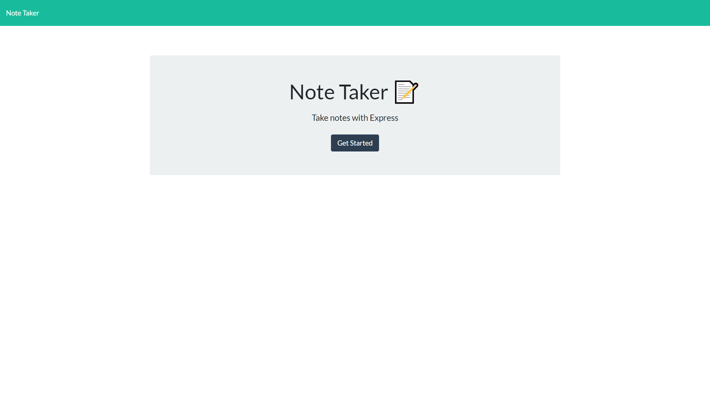
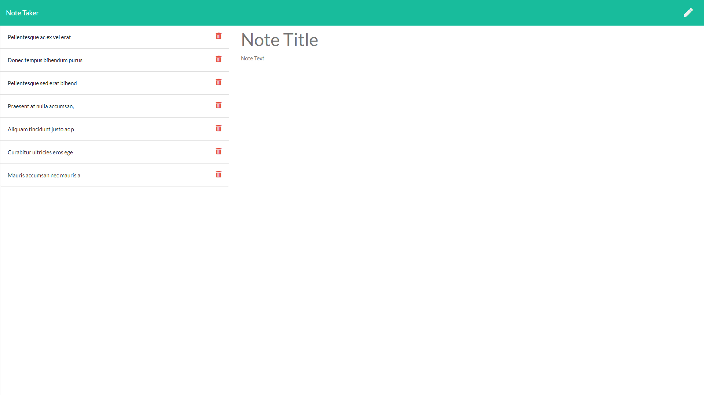

For users that need to keep track of a lot of information, it's easy to forget or be unable to recall something important. Being able to take persistent notes allows users to have written information available when needed.
An application that can be used to write, save, and delete notes. Starting with an already completed and functional front-end, my role was to code both the HTML and API routing and connect it to the front-end, as well as create a JSON file for persistent data. Built using Node.js and Express, as well as using an object-oriented-programming(OOP) model and ES8 asyncronous syntax(async/await).
